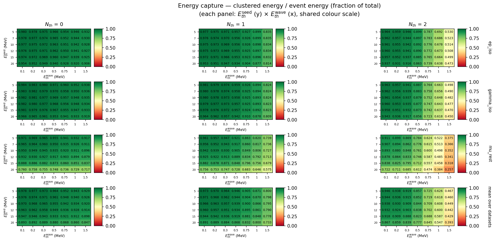
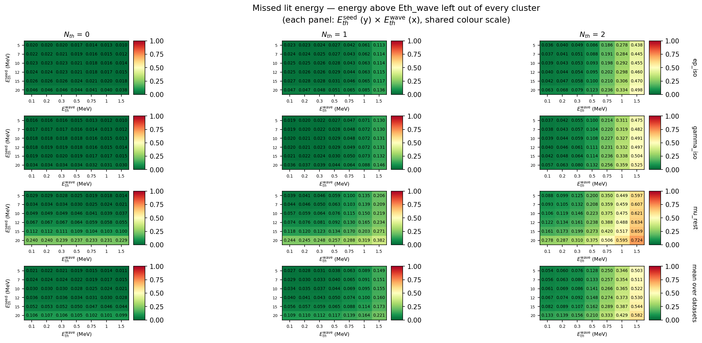
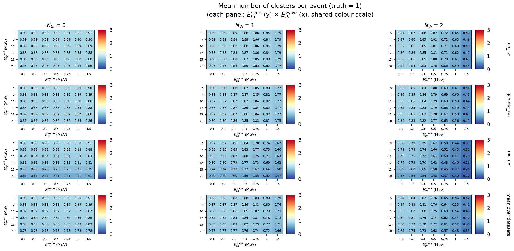
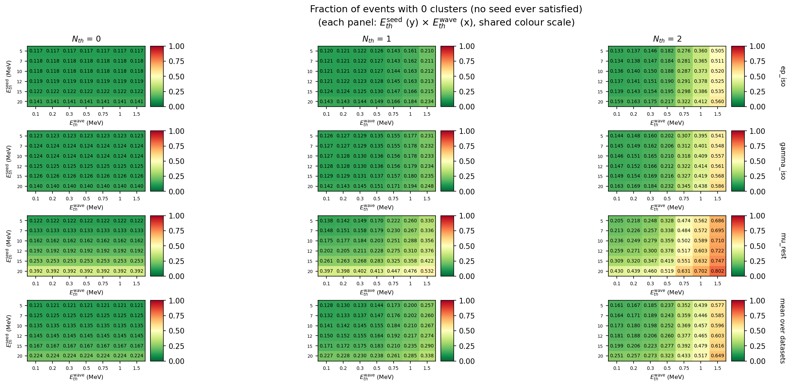
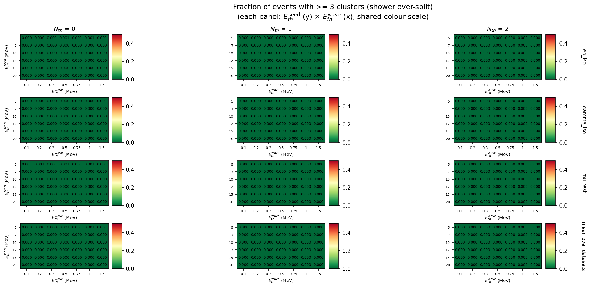
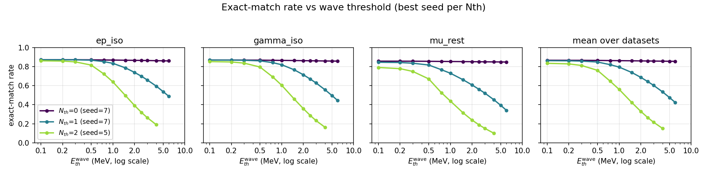
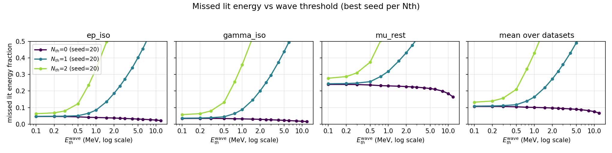

本文件记录第二次两阈值重建扫描：相比 26-09-23，把波前能量阈值
Eth_wave 在 0.1–2 MeV 区间加密，并把邻居数阈值
Nth 由 4 组缩减为 3 组。目的正是让
“能量阈值”这条物理轴显出结构，并把热图按 Nth
分面板绘制，而不是把 Nth 平均掉。
| 项 | 值 |
|---|---|
| 数据集 | ep_iso /
gamma_iso / mu_rest，各 50 000 事例（1M 的前
5%） |
Eth_seed |
5, 7, 10, 12, 15, 20 MeV（与上次相同，该轴灵敏度低） |
Eth_wave |
0.1, 0.2, 0.3, 0.5, 0.75, 1.0,
1.5, 2.0, 2.5, 3.0, 4.0, 5.0, 6.0, 8.0, 10.0, 12.0 MeV（16
点，仅 wave < seed） |
Nth |
0, 1,
2（去掉上次表现最差的 Nth = 3） |
| 点数 | 85 × 3 × 3 = 765，0 失败，总耗时 2902 s（18 进程） |
| 拓扑 | ecal_neighbor_info.root（568
晶体，4 近邻） |
| 事例数/数据集 | 50 000 |
与上一轮的对比：
| 26-09-23 | 本轮 26-10-16 | |
|---|---|---|
Eth_wave 网格 |
0.5, 1, 2, 3, 5, 8, 12（7 点，最细间隔 0.5） | 16 点，0.1–2 MeV 内间隔 0.1–0.25 |
Nth |
0, 1, 2, 3 | 0, 1, 2 |
| 点数 | 420 | 765 |
| 能量相关指标 | 3 个 | 9 个（新增未簇化能量、被漏掉的”点亮”能量、中位收束率等） |
复现命令：
cd pytrial
ECAL_SWEEP_N_EVENTS=50000 ECAL_SWEEP_NTHS=0,1,2 \
ECAL_SWEEP_NEIGHBOR_FILE=ecal_neighbor_info.root \
python3 sweeps/run_sweep.py # 765 点；写入 results/sweep/26-10-16/sweep_summary.csv
python3 sweeps/analyze.py # 热图（按 Nth 分面板）+ 剖面 + 表格仓库中
data/processed/*.root、data/raw/*.root 由
Git LFS 跟踪，但本机原先未安装
git-lfs，工作区内只有 133
字节的指针文件，扫描所需的全部事例数据缺失。
已按以下方式恢复（未修改任何原有数据）：把 git-lfs 3.5.1
安装到本地 .tools/（已加入
.gitignore），用公开仓库匿名 LFS 端点只取回
data/processed/** 三个文件（约 232 MB；
data/raw/** 未取回，因为重建只读
processed/）：
export PATH="$PWD/.tools:$PATH"
git lfs fetch --include="data/processed/**" origin
git lfs checkout恢复后校验：三个文件均为 ROOT Version 64004，大小
77.4 / 71.9 / 70.1 MB， EdepOfEachEvt 各 1 000
000 事例；拓扑 ecal_neighbor_info.root 含 568
晶体、 neighbors 与 second_neighbors
两个分支。无文件缺失，扫描得以完成。
Nth
的最优点（三数据集平均）Nth |
最优 seed | 最优 wave | exact-match | 能量捕获 | 未簇化能量 | 漏掉的点亮能量 |
|---|---|---|---|---|---|---|
| 0 | 7 | 0.1 | 0.8677 | 0.9755 | 0.0245 | 0.0242 |
| 1 | 7 | 0.1 | 0.8634 | 0.9708 | 0.0292 | 0.0289 |
| 2 | 5 | 0.1 | 0.8358 | 0.9460 | 0.0540 | 0.0536 |
Nth）| 数据集 | Nth |
seed | wave | exact-match | 能量捕获 | MAE |
|---|---|---|---|---|---|---|
ep_iso |
0 | 12 | 0.1 | 0.8790 | 0.9761 | 0.1210 |
gamma_iso |
0 | 12 | 0.1 | 0.8743 | 0.9816 | 0.1257 |
mu_rest |
0 | 5 | 0.1 | 0.8597 | 0.9709 | 0.1409 |
ep_iso 的 0.8790
与上一轮最好点（Nth=0, seed=12, wave=0.5，0.8786）基本持平——
接受度地板约 0.88 已到顶（见
§4.4），进一步加密只能改善能量指标，不能显著提高簇数准确率。
Nth 分面板；每格都是 Eth_seed ×
Eth_wave）图例：行 = 数据集（含三数据集平均），列 =
Nth，同一张图内共用色标，因此可以竖向比较
数据集、横向比较邻居数阈值。
heatmap_exact_match_rate_per_nth.png —
准确匹配率（波前阈值 0.1–1.5 MeV 放大版）。

heatmap_energy_captured_fraction_per_nth.png —
能量捕获率（全部团簇能量 / 事例总能量）。

heatmap_lit_energy_missed_fraction_per_nth.png —
高于 Eth_wave 却未进入任何团簇的能量占比。

heatmap_mean_clusters_per_nth.png —
平均团簇数（真值为 1）。

heatmap_frac_0_per_nth.png — 0
团簇事例比例（种子判据从未满足）。

heatmap_frac_3plus_per_nth.png — ≥3
团簇事例比例（簇射被过度拆分）。
每张指标另有 *_per_nth_full.png：完整 16 点
Eth_wave 轴、不标注数字、用等值线表示，
用于观察大尺度趋势（exact_match_rate 放大版另有逐
Nth 单图
heatmap_exact_match_nth{0,1,2}.png）。

profile_exact_match.png — 每个 Nth
取各自最优 seed，exact-match 随 Eth_wave 的变化。

profile_missed_energy.png —
同上，被漏掉的点亮能量占比。
Eth_wave
的物理意义非常清楚：它是一个单调的过分裂/丢能量权衡旋钮当 Nth ≥ 1 时，把 Eth_wave 从 0.1 抬到 3
MeV 会同时：
Nth=1, seed=7：0.863 →
0.645；Nth=2, seed=5：0.836 →
0.216）；Nth=2, seed=5：0.946 →
0.236）；原因是清楚的：单粒子簇射的横向尺度只有 4–6 块晶体，总能量中位数约 53
MeV，晶体间距 46 mm。 Eth_wave 一旦升到 1 MeV
以上，就把簇射外圈的软沉积挡在波前之外，连通区被切断 → 同一簇射
裂成多个团簇（frac_3plus
上升）或直接漏掉（未簇化能量上升）。转折区恰好落在 0.3–2
MeV，而旧网格（0.5, 1, 2, 3）只有 3
个采样点，看不出这条曲线。
Nth=2, seed=5（数据集中均）：
Eth_wave (MeV) |
0.1 | 0.2 | 0.3 | 0.5 | 0.75 | 1.0 | 1.5 | 2.0 | 3.0 |
|---|---|---|---|---|---|---|---|---|---|
| exact-match | 0.836 | 0.830 | 0.813 | 0.762 | 0.647 | 0.561 | 0.423 | 0.330 | 0.216 |
| 能量捕获 | 0.946 | 0.938 | 0.919 | 0.857 | 0.725 | 0.626 | 0.467 | 0.363 | 0.236 |
| 未簇化能量 | 0.054 | 0.060 | 0.076 | 0.129 | 0.250 | 0.346 | 0.503 | 0.609 | 0.740 |
0.1 → 0.5 已损失 7.4 个百分点的
exact-match 与 8.9 个百分点的能量捕获；
0.1 → 0.2 只损失 0.6 个百分点。最优波前阈值应取
0.1–0.2 MeV，而不是上一轮推荐的 0.5
MeV——这正是提高颗粒度带来的直接收益。所有 Nth
的最优点都被推到网格下界 0.1 MeV，
说明真正的平台可能更低（但低于约 0.1 MeV
已接近数值噪声，收益有限）。
Nth
仍是主导参数，但缩小差距后结论更精确Nth |
最佳 mean exact-match | 相对 Nth=0 的损失 |
该点能量捕获 |
|---|---|---|---|
| 0 | 0.8677 | — | 0.9755 |
| 1 | 0.8634 | −0.43 pp | 0.9708 |
| 2 | 0.8358 | −3.19 pp | 0.9460 |
| 3（上轮） | 0.5333 | −33 pp | 0.6097 |
把邻居要求放到种子判据上，Nth=3
是灾难性的，Nth=2 也有明显代价；只有 Nth=0/1
在最优波前阈值下几乎等价（差 0.43 pp）。“是否要求至少 1
个近邻”是抗噪与接受度之间的 唯一有意义的取舍，而它只在
Eth_wave 足够低时才成立——这正是上一轮把 Nth 与
Eth_wave 混在一起平均后看不出的一点。
Nth=0, seed=7 时 0 团簇比例为
0.1248，且从 0.1 到 12 MeV 完全不随
Eth_wave 变化；
frac_3plus ≈ 0.0001–0.0002。也就是说约 12.5%
的事例总沉积能量低于种子阈值（几乎没有
可见能量），任何阈值都不可能给出 1 个团簇。因此理论上限就是
~0.875，本扫描已达到该上限： ep_iso 0.8790
甚至略高于三数据集平均的地板，说明它的事例能量分布略偏高。
mu_rest 的 exact-match 明显低于
ep_iso/gamma_iso（0.860 vs 0.879/0.874），且
frac_0 ≈ 0.133 高于另外两个（0.118 / 0.124）。μ
子静止衰变产生的电子能谱较软，更多事例落在 地板以下。三者的
Eth_wave 依赖形态一致，说明上述物理机制与粒子种类无关。
| 目标 | 建议 |
|---|---|
| 单粒子簇数最准、能量也最全 | Nth=0, Eth_seed=7, Eth_wave=0.1（mean
exact 0.8677，能量捕获 0.9755） |
| 略抗噪（种子需 1 个近邻） | Nth=1, Eth_seed=7, Eth_wave=0.1（mean
0.8634，仅比 Nth=0 低 0.43 pp） |
| 若某数据集噪声更强 | Nth=2, Eth_seed=5, Eth_wave=0.1（mean
0.8358，代价约 3 pp） |
| 需要高纯净度、可牺牲效率 | 抬高 Eth_wave（如 2
MeV）可压低 frac_3plus，但 exact-match 掉到 0.33
以下，不建议 |
对全部三个数据集，波前阈值都应压到 0.1–0.2 MeV；种子阈值取 7–12 MeV 均可（该轴平坦）。
| 文件 | 内容 |
|---|---|
sweep_summary.csv |
765 行完整指标，32 列 |
best_params.md /
best_params.html |
各指标最优点、Nth
对最优点的作用、Top-10 点 |
heatmap_<metric>_per_nth.png |
行=数据集、列=Nth 的
seed × wave 热图（0.1–1.5 MeV 放大、带数字） |
heatmap_<metric>_per_nth_full.png |
同上，完整 16 点 Eth_wave
轴、等值线、无数值标注 |
heatmap_exact_match_nth{0,1,2}.png |
每个 Nth
单独一张放大热图（含三数据集 + 平均） |
profile_exact_match.png /
profile_energy_capture.png /
profile_missed_energy.png |
指标随 Eth_wave 的剖面（按
Nth 分色） |
tradeoff_scatter.png |
簇数质量 vs 能量捕获（点大小 ∝
Nth，颜色 = seed） |
best_exact_match_rate_bars.png |
每个数据集/Nth
的最优点柱状对比 |
关键指标列（CSV）：exact_match_rate、energy_captured_fraction、energy_containment_mean/median、
energy_split_fraction、energy_unclustered_fraction、lit_energy_missed_fraction、
frac_events_containment_ge_90、frac_events_all_energy_one_cluster、frac_0/1/2/3plus、
MAE、RMSE、bias、recon_seconds。
exact_match 只衡量”团簇数 = 1”，
无法验证分辨多粒子的能力。需把三个单粒子数据集按已知重数叠加后重跑，或提供
多粒子事例样本（旧的 child_stitched_edeps.root 因
evt_stitch_child.py 缺陷已废弃）。Eth_wave < 0.1 MeV
未扫描。Nth=2 最多 0.0035）， 且 frac_3plus
不变，无噪声过分裂。Eth_seed 轴仍可细化。mu_rest 最优点从 seed=5（0.8597）改进到
seed=6（0.8614）。